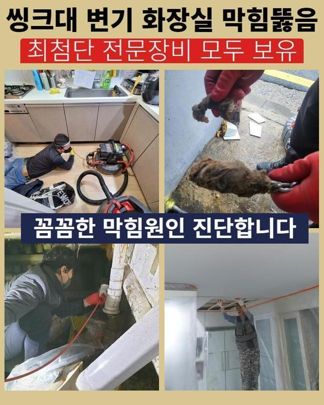
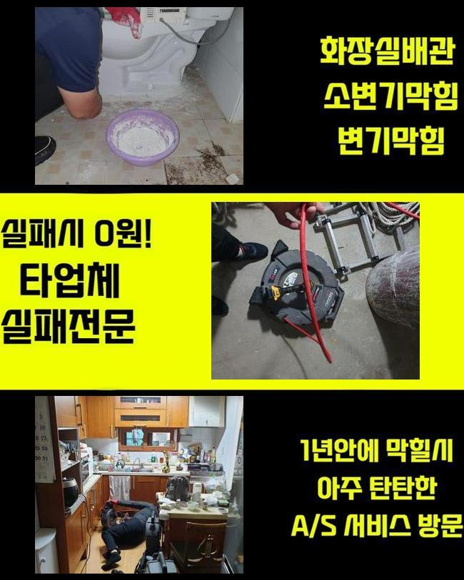
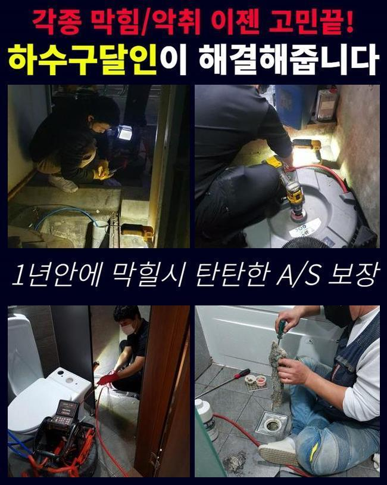
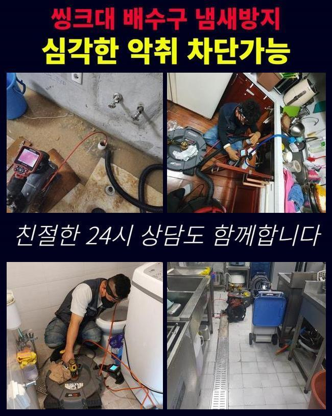
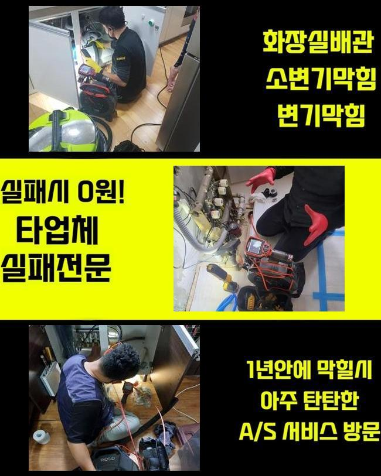
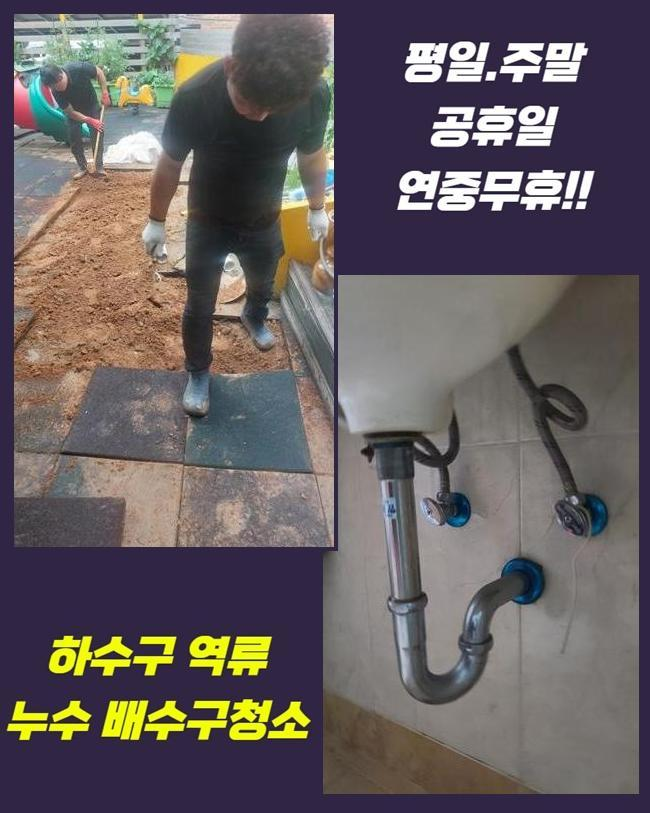
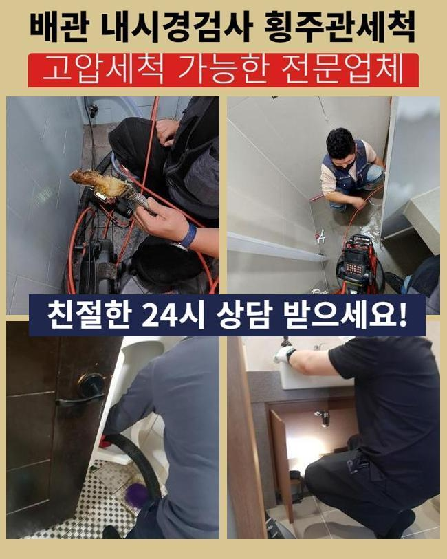

🏠 비봉면욕실역류 하수구뚫는업체 출장설비
용인 싱크대막힘 전문 시공 후기

📋 작업 개요
- 위치: 용인
- 서비스 유형: 싱크대막힘, 변기막힘, 하수구막힘, 배관막힘, 역류해결, 뚫는업체, 배관청소, 설비공사
- 작업 일시: 2025. 5. 19. 4:20
- 업체명: 하수구수사대 (010-5615-2118)
🔍 문제 상황
비봉면욕실역류 하수구뚫는업체 출장설비
리모델링 공사가 완료된 아파트에서 새로 달았던 싱크대 개수대에 물을 받아서 원활하게 물이 못나가고 정체한다는 사연을 접수하고 막힘 현장에 도착하게 됐어요
리모델링하며 싱크대를 변경 했었던 이후 수돗물이 나가지 못한 채 계속 고여버려서 물의 역류같은 현상도 동반된다고 하셨어요
보통 새것으로 교체를 한 싱크대 내부에서 물 빠짐이 원만하게 되지 않으면 시설물을 조립할 때의 실수나 배관의 노후같은 이슈를 품고 있을 수 있어요
겉으로만 관찰해서는 별 탈 없는 듯 했고 깊숙하게 자리한 배관의 일부가 변형되면서 내구성이 약해서 막힘 현상이 촉발된 것이 아닐까 추측됐어요
오늘 찾은 아파트는 구옥에 속하는 아파트였고 여러가지 시설물들이 어쩔 수 없이 낡아있더라고요
한 포인트라도 부식된다면 내부 물을 순탄하게 방출해내지 못 하는 상태로 전락하며 파이프라인에 다량의 오물이 말라붙는 배경을 갖고 있어서 통수의 어려움이 여기저기서 터져 나옵니다
내부 인테리어를 손 보시면서 싱크대를 새걸로 바꿔다는 경우에는 배수로 전반의 노후화 역시 고려사항에 넣지 않으면 기본 배수가 되지 않는 억울한 사태가 생깁니다
전체적인 아파트 건물이 오랜 세월이 느껴진다면 배수관의 건강도 취약해졌을 것이니 원인규명을 해보면 관로 내구성의 문제일 가능성이 유력합니다
부동산 거래를 하기 전이나 낡은 곳을 수리하고 손볼 때는 배수구의 상태까지 검사해보고 문제가 중중하면 사전 조치로 교환작업을 하는 과정을 거치는 게 좋습니다

🔎 원인 분석
💡 전문가 진단: 정밀 진단 장비를 사용하여 슬러지의 고착 여부를 판명하고 타격/세척 작업을 실시했습니다.
주방 배관의 문제를 극복하기 위해서 우선 흡입기능의 석션기로 관로에 적체된 찌꺼기 분량과 잔여하는 물을 없애버렸어요
물이 막히는 증상을 가장 조속히 없애주는 습식 청소기같은 역할로써 주로 입구에 고여있는 방해 요인들을 싹 치우는 데에 효력을 지닌 작업입니다
단순 막힘은 아닌지 오늘 소개한 작업지의 경우는 안타깝게도 석션을 통한 작업들을 여러 번 거듭해서 집중적으로 청소했으나 가득 차올랐던 물이 나갈 낌새가 안 보이는 상황이라는 게 문제였습니다
심층 구역에서 더욱 큰 오류가 도사리는 것 같다고 예상이 됐습니다
미세한 노즐에 달린 배관 전용 카메라를 진입시켜서 내부를 아주 크기도 신경써가며 탐색하면서 막힘의 요인을 포착해 보기로 했습니다
작은 형태의 장비지만 현재 파이프의 컨디션을 낱낱이 보여주기에 개수대 내에서 수돗물이 이동되지 않을 때 관로의 얼마만큼의 구간에서 막힘이 생겨났는지 어떠한 형태의 이물질이 주범인지 잡을 수 있습니다
여기저기를 비춰보면서 내부 검토를 해봤는데 관로의 안쪽에는 음식물 덩어리와 여러가지 오물들이 형성되어버린 상태라고 관측됐습니다
주방 싱크대 밑에 자리한 배관은 끈적한 기름과 소량의 음식물이 범벅이 되면서 막힘을 만들어 내곤 하는데 관로 정화작업을 안 받는다면 물기 없이 경직화되는 형태로 변화하게 됩니다
해당 싱크대 하수구 속도 비슷한 오염원이 끼어있던 상황이긴 했는데 입구를 지나고 나니 끝에 이르기까지 슬러지와 상당히 많은 음식쓰레기가 혼합돼서 통로를 막고 있는 모습으로 보였습니다
이렇게 고착화가 된다면 석션작업만 거쳐서는 도무지 물길을 다시 낼 수 없으니 물리적 방식으로 내부 정화를 해야 했습니다

🔧 작업 과정
카메라로 계속 관로를 모니터링 해주면서 막혀 있는 영역에 가깝게 접근하여 강력한 샤프트 장비로 큰 덩어리가 된 노폐물을 분산시키며 통로를 내는 단계를 이어갔습니다
장비 끝의 금속 헤드를 통하여 딱딱하게 응고된 고체를 추가적인 기기를 설치해서 제거하는 장치이며 아무리 오염원이 내부에 오래도록 접착됐었다고 해도 아무리 딱딱한 대상이라도 작은 입자로 조각냅니다
관로에 직접적으로 과한 자극을 준다면 균열이 갈 수 있으니 적당한 세기로 세팅해서 오염물질들만 부수는 섬세함이 있어야 합니다
내시경 스크린을 동시에 확인해 가면서 꽉 막고있던 장애물이 다 쪼개 지면서 석션기로 수집이 될 만큼 자잘하게 변하도록 신중하고 꼼꼼하게 샤프트를 돌렸습니댜
거대했던 이물질이 작게 분해가 된 것을 체크하고 다시금 석션작업에 착수하여 자잘한 입자가 되어버린 잉여 찌꺼기를 빨아당겼어요
이물질 낱개가 작더라도 특정한 배관 구역에 잔여한 채 있다면 새로운 막힘 사고를 생성할 수 있으므로 내부에 떠다니는 이물질들을 모조리 빼내서 폐기했습니다
전적인 모든 하수구 작업이 마무리되고 나서 최종적으로 카메라 장치를 청소한 내부로 들여보내서 정말로 내부 경로가 청결하게 관리가 완료됐는지 점검해 주었습니다
혹시나 내부에 있는 분량이 있지는 않은지 다친 부위가 없었는지 철저하게 진단을 해보아야 합니다
처음부터 끝부분까지 놓치지 않고 점검했는데 스케일링으로 분해했었던 이물질의 일체가 완전하게 제거되어버린 상황으로 보였어요
오늘 담당한 장소는 노후된 아파트의 하수구라는 한계가 있다보니 미미한 수준이나마 찌꺼기가 남겨져 있었으면 재막힘이 발생할 위험도 존재했습니다
모든 하수구 작업이 완벽하게 수행됐기에 주방의 주름 파이프를 제자리에 흔들림 없이 고정시켜 드렸습니다
노후화된 호스가 많이 지저분하고 노화가 이뤄졌다면 새 부속으로 바꿔서 싱크대 밑과 배수구에 물길을 만드는 작업을 거쳐야 합니다
긴 형태의 주름관을 조립한 다음에 기능 체크를 해보려고 물을 폐수하면서 검사를 걸어보았습니다
작업이 잘 되었는지 싱크대에서 내보낸 물이 바닥 배수구 아래까지 콸콸대며 통쾌하게 빠져나가는 게 목격됐고 약간의 고임이나 저항도 없는 순조로운 흐름이 보였습니다
싱크대 배관상의 불통을 다루는 저희의 시공의 진짜 마무리로 배관 속에서 투출된 이물질들을 물을 빼고 버렸습니다
막힘증상을 낳았던 번들대는 기름기가 뭉친 고착물은 잘게 쪼갰더라도 하수구에 내버려 두면 아래에 고이면서 문제를 낳을 수 있기 때문에 필터링을 해주고 처분해야 한답니다


✅ 작업 완료
그냥 배수구 내에 버려도 무방한 물은 변기 속에 붓고 유분기가 가득한 고체 찌꺼기들은 따로 종량제봉투에 넣어 폐기처리 했습니다
배관라인을 청결하게 치우는 작업을 포함해서 주변 정리까지도 해주며 하수구 정화 활동을 종결하게 됐어요
집안 설비 중에서도 물을 다량 사용하게 되는 주방의 싱크대가 스탑되면 다른 곳보다 더 난감할 수 있습니다
막힘이 보이는 즉시 접수를 해주시면 완성도 높게 복원해 드리도록 할게요




⚠️ 주방 싱크대 배관 막힘 예방 수칙
- ✅ 기름기가 묻은 식기나 프라이팬은 설거지 전 키친타올로 반드시 기름때를 닦아내세요.
- ✅ 주기적으로 싱크대 개수대에 뜨거운 물을 가득 받아 한 번에 내려 배관 내부 기름을 씻어내세요.
- ✅ 배수구 거름망을 미세한 필터로 사용하시고 음식물 찌꺼기가 틈으로 새어 들지 않게 관리하세요.
- ✅ 베이킹소다와 식초를 뜨거운 물과 함께 일주일에 한 번씩 부어주면 배관 살균과 막힘 예방에 좋습니다.
💡 핵심 정리
- 확실한 장비 작업(내시경 점검 및 샤프트 스케일링)으로 원인을 뿌리 뽑습니다.
- 작업 후 1년 이내에 동일한 부위 재발 시 100% 무상 A/S 서비스를 보장합니다.
- 서울 · 경기 · 인천 전 지역에 24시간 언제든 긴급 출동할 수 있도록 항시 대기 중입니다.
❓ 자주 묻는 질문 (FAQ)
🚨 용인 싱크대막힘 문제로 고민이신가요?
정확한 원인 진단과 확실한 시공으로 재발 없는 해결을 약속드립니다.
24시간 긴급 출동 | 서울 · 경기 · 인천 전지역 | 1년 내 재발 시 무상 A/S